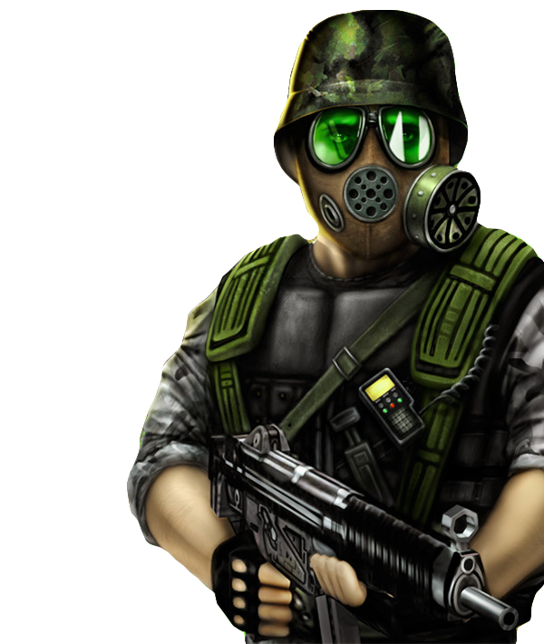
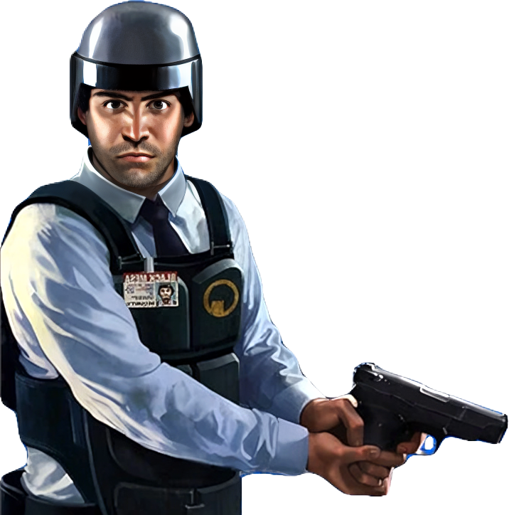

Half-Life
Co říká Wikipedie
Half-Life (graficky znázorněno jako HλLF-LIFE) je akční počítačová hra ve stylu sci-fi FPS, vyvinutá firmou Valve Corporation. První vydání hry společností Sierra Studios v roce 1998 bylo určené pro PC s operačním systémem Microsoft Windows. Hra byla později vydána také pro herní konzole PlayStation 2 a v lednu 2013 pro operační systémy Linux a Mac OS X. Herní engine hry pro Windows se nazývá GoldSource a je založen na engine hry Quake od společnosti id Software, jenž byl ale pro hru Half-Life velmi upravený a navíc používal i části kódu v tu dobu novějšího engine id Tech 2 pro hru Quake 2. Hře byly kritiky vytýkány především mnohé skriptované části a celková prezentace. Hra ale získala mnohá ocenění od herních kritiků i samotných hráčů a byla mnohými herními časopisy po celém světě vyhlášena jako akční hra roku či dokonce nejlepší hra všech dob. Ke dni 16. listopadu 2004 bylo prodáno osm milionů kopií a v prosinci 2008 to bylo už 9,3 milionu kopií.

Děj
Děj se odehrává někdy mezi lety 1998 až 1999 v pouštích Nového Mexika ve výzkumném komplexu Black Mesa, který se v mnoha ohledech velmi podobá skutečnému výzkumnému centru Los Alamos a oblasti 51. Hlavní postavou hry je Gordon Freeman, sedmadvacetiletý teoretický fyzik, absolvent MIT. Freeman je povolán jako experimentátor k pokusu pro vytvoření teleportu pomocí nalezeného mimozemského krystalu. Tento pokus se ale vymkne kontrole, zničí velkou část Black Mesa a zabije mnoho lidí. Výsledkem nepovedeného pokusu je tzv. resonanční kaskáda (fiktivní jev) a po celé Zemi jsou vytvořeny teleporty, kterými se ale nekontrolovatelně přemisťují mimozemské bytosti z dimenze Xen. Freeman, jako jeden z přeživších, se musí pomocí palných zbraní, energetických zbraní nebo páčidla dostat přes radiací zamořené komplexy Black Mesa a otevřené vojenské prostory do dimenze Xen a zničit Nihilantha – mozek mimozemské armády nepřátelských organismů. Ve hře čas od času uvidí tajemného muže v obleku – G-Mana. Ten udělá v závěru hry Gordonovi zajímavou nabídku.Half-Life: Opposing Force
Half-Life: Opposing Force je prvním datadiskem pro Half-Life, vyvíjený společností Gearbox a vydaný 1. listopadu 1999. Opposing Force byl oznámený jako Mission pack (balík misí) pro Half-Life v dubnu 1999 a vyšel pro Windows verzi hry. Opposing Force byl přijímán kladně kritikou, a mnozí ukazovali, že přidávání datadisků se stává běžné pro celý žánr FPS. Hra vyhrála titul Počítačová hra roku 2000 od Akademie Interaktivních umění a Věd.Děj
Hlavním hrdinou je Adrian Shephard, příslušník elitní jednotky Mariňáků. Při hraní datadisku se hráč ocitne v kůži vojáka HECU (Hazardous Environment Containment Unit, organizace podléhající Americké armádě podobně jako např. Delta Force nebo Navy Seals), který byl vládou poslán, aby vzniklý problém "vyřešil". Vojáci vše řeší prostým "vyčištěním" celého komplexu s důrazem na eliminaci všech přeživších organismů. Poté se dozvídá, že mariňáci s mimozemskými silami ze světa Xen prohrávají a mají se stáhnout. Snaží se tedy ze základny utéct. Během hry prochází ve stejném čase stejnými lokacemi jako Gordon Freeman v původní hře, přesto však občas vidí věci z poněkud odlišné perspektivy. Během hry dokonce Freemana i zahlédne. Hlavní nepřítel je také tzv. Black Ops, elitní jednotka poslána neznámo kým, aby celou oblast zajistila. Ti přitom neváhají zabíjet kohokoliv, mariňáky nevyjímaje. Přeživší sekuriťák odhaluje Shephardovi, že Black Ops chtějí odpálit v základně jadernou bombu a zabít vše živé uvnitř. Portálem chce také projít masivní mimozemský červ, Shephard ho zbraněnmi přinutí projít zpět skrz červí díru.

